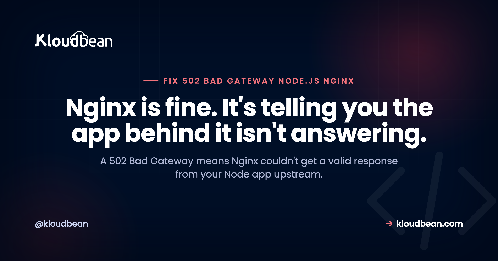

502 Bad Gateway with Node.js and Nginx: How to Fix It

A 502 Bad Gateway on a Node.js site behind Nginx is one of those errors that looks like a web server problem but almost never is. Nginx is up and answering, that's why you get a styled 502 page. What it's telling you is that when it forwarded the request to your Node app upstream, it got nothing usable back. The app is down, on the wrong port, or too slow. This guide shows you how to find out which, with the one log file that hands you the answer.
A 502 means Nginx couldn't get a valid response from your Node app. Check three things: is the Node process actually running and listening on the port Nginx forwards to; does proxy_pass point at that exact port; and is the app responding in time. Read /var/log/nginx/error.log, it literally says "connection refused" (app down or wrong port) or "upstream timed out" (app too slow). Fix that root cause and the 502 clears.
What 502 actually means here
Nginx is acting as a reverse proxy: the browser talks to Nginx, and Nginx forwards the request to your Node app running on something like 127.0.0.1:3000. A 502 Bad Gateway means that forwarding step failed, Nginx reached out to the upstream and got a refusal, a timeout, or a malformed response. So the fault is almost always in the Node app or in how Nginx is told to reach it, not in Nginx serving pages. That reframing saves you from editing the wrong thing.
Step 1: read the Nginx error log
This is the shortcut. The Nginx error log names the exact failure:
tail -f /var/log/nginx/error.logYou're looking for one of two lines. The first points at a dead or misplaced app:
connect() failed (111: Connection refused) while connecting to upstreamThat means nothing is listening where Nginx tried to connect, the Node app is down, crashed, or on a different port. The second points at a slow app:
upstream timed out (110: Connection timed out) while reading response header from upstreamThat means the app is up but didn't respond within Nginx's timeout. Two very different fixes, and the log tells you which you have before you touch anything.
Fix: connection refused (app down or wrong port)
First confirm the app is even running and answering locally, bypassing Nginx entirely:
# Is Node responding on its port directly?
curl -I http://127.0.0.1:3000
# Is the process actually up?
pm2 listIf curl fails, the app is the problem, not Nginx, and you likely have a crash or restart loop to chase. If curl succeeds but the port doesn't match your Nginx config, line them up. The proxy_pass port must equal the port your app listens on:
server {
listen 80;
server_name example.com;
location / {
proxy_pass http://127.0.0.1:3000; # must match the app's real port
proxy_http_version 1.1;
proxy_set_header Host $host;
proxy_set_header X-Real-IP $remote_addr;
proxy_read_timeout 60s;
}
}One more subtlety: make sure your app binds to the address Nginx uses. If Nginx proxies to 127.0.0.1:3000, the app should listen on 127.0.0.1 (or 0.0.0.0), and the ports must agree. After a config change, reload Nginx with sudo nginx -t && sudo systemctl reload nginx.
Fix: upstream timed out (app too slow)
If the log says timed out, Nginx gave up waiting. You can raise the ceiling:
location / {
proxy_pass http://127.0.0.1:3000;
proxy_read_timeout 120s; # give slow responses more room
}But treat that as a bandage, not a cure. A request that takes over a minute is usually a design smell: a slow query, a synchronous call to a third-party API, a heavy report generated inside the request. The better fix is to make the endpoint fast or move the long work to a background job and return quickly. Raising the timeout keeps the 502 away; fixing the latency keeps your users.
When the 502 is really a crash
A flickering 502 that comes and goes often means the Node process is crashing and restarting under load, which is the same underlying issue as a PM2 restart loop or a heap-out-of-memory kill. During each crash-and-restart window, Nginx has no upstream and returns 502. If your 502s correlate with traffic spikes or specific requests, don't tune Nginx, go fix the crash. The error will be in your app's logs, and the neighboring guides below cover the common ones.
| Nginx error log says | Meaning | Fix |
|---|---|---|
| Connection refused | App down or wrong port | Start app, match proxy_pass port |
| Upstream timed out | App too slow to respond | Speed up endpoint or raise timeout |
| No live upstreams | App crash-looping | Fix the crash in the app logs |
| 502 only under load | OOM or overload | Fix memory, scale the app |
How managed hosting removes the proxy guesswork
A good share of 502s are really "the Nginx and Node wiring drifted apart," wrong port, missing reload, app listening on the wrong interface. That whole class disappears when the proxy is managed for you. On Kloudbean the reverse proxy in front of your always-on Node app is configured and maintained by the platform, along with SSL, so you're not hand-editing proxy_pass or reloading Nginx at all. A genuine app crash can still cause a 502, that's your code, but the misconfiguration causes are off the table.

Related reading
The proxy layer and the crash causes are the two halves of a 502. For the proxy, see Nginx reverse proxy for Node and reverse proxy explained. For the crashes, see PM2 app keeps restarting, ECONNREFUSED, and heap out of memory. To catch 502s early, set up uptime monitoring.
Skip the Nginx wiring entirely.
Run your always-on Node app behind a managed reverse proxy with SSL handled for you, so the port, proxy, and reload steps behind most 502s are done. Deploy from GitHub on flat pricing from $8/mo. Start at kloudbean.com.
Managed reverse proxy · Free SSL · Always-on Node under PM2 · GitHub deploys · Flat from $8/mo
FAQ
What causes a 502 Bad Gateway with Node.js and Nginx?
Nginx returns 502 when it can't get a valid response from your Node app upstream. The usual causes are the app being down or on a different port than proxy_pass expects, the app responding too slowly for Nginx's timeout, or the app crash-looping so there's no upstream during restarts. The Nginx error log tells you which.
How do I find out why Nginx returns 502?
Read /var/log/nginx/error.log. "Connection refused" means the app is down or on the wrong port; "upstream timed out" means the app is too slow. Then test the app directly with curl -I http://127.0.0.1:3000 to confirm whether it's responding at all, which separates an app problem from a proxy problem.
Is 502 an Nginx problem or a Node problem?
Almost always a Node problem or a proxy-configuration problem, not Nginx itself, since Nginx is clearly running if it can serve the 502 page. Either the app isn't answering where Nginx expects, or it's too slow. Fix the app or the proxy_pass target rather than reinstalling Nginx.
How do I fix "upstream timed out" 502s?
You can raise proxy_read_timeout to give slow responses more room, but a request taking over a minute usually signals a slow query or a synchronous external call. The durable fix is to speed up the endpoint or move long work to a background job so the request returns quickly. Raising the timeout just hides the latency.
Why do I get a 502 only under load?
That pattern points at the app crashing or being killed under pressure, often out of memory, then restarting. During each restart there's no upstream, so Nginx returns 502. Don't tune Nginx for this; find the crash in your app logs, fix the memory or overload issue, and the load-related 502s stop.
Does managed hosting prevent 502 errors?
It removes the configuration causes. When the reverse proxy, port wiring, and SSL are managed, the "wrong port" and "forgot to reload Nginx" class of 502 goes away. A real crash in your own code can still cause one, because that's your application, but you're no longer debugging proxy config on top of it.